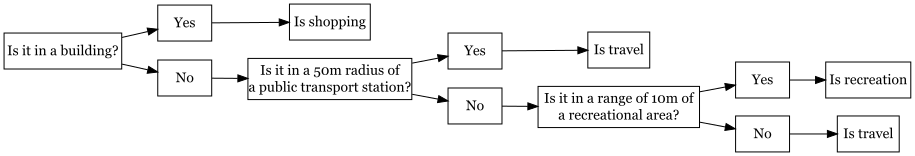

An attempt to differntiate walking patterns based on attributes and context information Work for the module Patterns and Trends FS24
Author
Saskia Gianola and Sarah Wirth
Preprocessing
# used libraries #### library("XML")library("leaflet")library("sf")library("tmap")library("ggplot2")library("tidyverse")library("readr")library("trajr")library("yardstick")library("caret")library("DiagrammeR")library("png")library("DiagrammeRsvg")library("magrittr")library("rsvg")# Preprocessing ##### read training activitiestraining_files <-list.files("activities/.", pattern ="*.gpx")for (i in1:length(training_files)){ filename <-paste0("act", i) wd <-paste0("activities/", training_files[i])assign(filename, htmlTreeParse(file = wd, useInternalNodes =TRUE))}# function to parse activities and write into data framebuilt_df <-function(activity) {# get coordinates coords <-xpathSApply(doc = activity, path ="//trkpt", fun = xmlAttrs)# get elevation elevation <-xpathSApply(doc = activity, path ="//trkpt/ele", fun = xmlValue)# get time time <-xpathApply(doc = activity, path ="//trkpt/time", fun = xmlValue)data.frame(lat =as.numeric(coords["lat", ]),lon =as.numeric(coords["lon", ]),ts_POSIXct =ymd_hms(time, tz ="UTC"),elevation =as.numeric(elevation) )}# convert files to dataframeact1_df <-built_df(act1)act2_df <-built_df(act2)act3_df <-built_df(act3)act4_df <-built_df(act4)act5_df <-built_df(act5)act6_df <-built_df(act6)act7_df <-built_df(act7)act8_df <-built_df(act8)act9_df <-built_df(act9)act10_df <-built_df(act10)act11_df <-built_df(act11)act12_df <-built_df(act12)# assign ID and description to single filesact1_df$ID <-"test_1"act1_df$ID_text <-"test_Waedenswil_Reidbach_Zentrum"act2_df$ID <-"test_2"act2_df$ID_text <-"test_Waedenswil_Coop_Bahnhof"act3_df$ID <-"test_3"act3_df$ID_text <-"test_Waedenswil_Schloss_Mensa"act4_df$ID <-"test_4"act4_df$ID_text <-"test_Waedenswil_Gruental_Bahnhof1"act5_df$ID <-"test_5"act5_df$ID_text <-"test_Waedenswil_Gruental_Bahnhof2"act6_df$ID <-"test_6"act6_df$ID_text <-"test_Rueti_Home_Bahnhof_Coop_Home"act7_df$ID <-"test_7"act7_df$ID_text <-"test_test_Rapperswil_See_Bahnhof"act8_df$ID <-"test_8"act8_df$ID_text <-"test_Rueti_Home_Coop_Home"act9_df$ID <-"test_9"act9_df$ID_text <-"test_Neuhausen_Bahnhof_Rhein"act10_df$ID <-"test_10"act10_df$ID_text <-"test_Neuhausen_Rhein_Bahnhof"act11_df$ID <-"test_11"act11_df$ID_text <-"test_S-chanf"act12_df$ID <-"test_12"act12_df$ID_text <-"test_Regensdorf_Buero_Coop"# function to convert data frame into sf objectdf_to_sf <-function(df){st_as_sf(df, coords =c("lon", "lat"), crs =4326 , remove =FALSE)}# combine all activitites into one data frametraining_activities_df <-rbind(act1_df, act2_df, act3_df, act4_df, act5_df, act6_df, act7_df, act8_df, act9_df, act10_df, act11_df, act12_df)# turn data frame into sf objecttraining_activities_sf <-df_to_sf(training_activities_df)# export sf object for setting attributes in GIS# export_test_activities <- st_write(test_activities_sf, "test_activities.shp")# read Saskias activitiessaskia_files <-list.files("activities/activities_saskia.", pattern ="*.gpx")for (i in1:length(saskia_files)){ filename <-paste0("saskia_", i) wd <-paste0("activities/activities_saskia/", saskia_files[i])assign(filename, htmlTreeParse(file = wd, useInternalNodes =TRUE))}# convert files to dataframesaskia_1_df <-built_df(saskia_1)saskia_2_df <-built_df(saskia_2)saskia_3_df <-built_df(saskia_3)saskia_4_df <-built_df(saskia_4)saskia_5_df <-built_df(saskia_5)saskia_6_df <-built_df(saskia_6)# assign ID to single filessaskia_1_df$ID <-"saskia__1"saskia_1_df$ID_text <-"saskia_Pfaeffikon_Seedamm1"saskia_2_df$ID <-"saskia__2"saskia_2_df$ID_text <-"saskia_Pfaeffikon_Seedamm2"saskia_3_df$ID <-"saskia__3"saskia_3_df$ID_text <-"saskia_Regensdorf_Buero_Bahnhof"saskia_4_df$ID <-"saskia__4"saskia_4_df$ID_text <-"saskia_Rueti_Zentrum_Home"saskia_5_df$ID <-"saskia__5"saskia_5_df$ID_text <-"saskia_Rueti_Home_Bahnhof_Coop_Home"saskia_6_df$ID <-"saskia__6"saskia_6_df$ID_text <-"saskia_Waedenswil_Gruental_Bhf"# combine all activitites to one data frameactivities_saskia_df <-rbind(saskia_1_df, saskia_2_df, saskia_3_df, saskia_4_df, saskia_5_df, saskia_6_df)# turn data frame into sf objectactivities_saskia_sf <-df_to_sf(activities_saskia_df)# export sf object for setting attributes in GIS# export_activities_saskia <- st_write(activities_saskia_sf, "activities_saskia.csv")# read Sarahs activitiessarah_files <-list.files("activities/activities_sarah", pattern ="*.gpx")for (i in1:length(sarah_files)){ filename <-paste0("sarah_", i) wd <-paste0("activities/activities_sarah/", sarah_files[i])assign(filename, htmlTreeParse(file = wd, useInternalNodes =TRUE))}# convert files to dataframesarah_1_df <-built_df(sarah_1)sarah_2_df <-built_df(sarah_2)sarah_3_df <-built_df(sarah_3)sarah_4_df <-built_df(sarah_4)sarah_5_df <-built_df(sarah_5)sarah_6_df <-built_df(sarah_6)sarah_7_df <-built_df(sarah_7)sarah_8_df <-built_df(sarah_8)sarah_9_df <-built_df(sarah_9)sarah_10_df <-built_df(sarah_10)sarah_11_df <-built_df(sarah_11)sarah_12_df <-built_df(sarah_12)# assign ID and description to single filessarah_1_df$ID <-"sarah__1"sarah_1_df$ID_text <-"sarah_Denner_Einkauf"sarah_2_df$ID <-"sarah__2"sarah_2_df$ID_text <-"sarah_Klafi_Feld"sarah_3_df$ID <-"sarah__3"sarah_3_df$ID_text <-"sarah_Klafi_von_Zug_Heim"sarah_4_df$ID <-"sarah__4"sarah_4_df$ID_text <-"sarah_Migros_groesserer_Einkauf"sarah_5_df$ID <-"sarah__5"sarah_5_df$ID_text <-"sarah_Migros_kleiner_Einkauf"sarah_6_df$ID <-"sarah__6"sarah_6_df$ID_text <-"sarah_Rosengarten_und_Shopping_Winti"sarah_7_df$ID <-"sarah__7"sarah_7_df$ID_text <-"sarah_Spaziergang_am_Morgen_Bub"sarah_8_df$ID <-"sarah__8"sarah_8_df$ID_text <-"sarah_Spaziergang_Klafi_kleine_Runde"sarah_9_df$ID <-"sarah__9"sarah_9_df$ID_text <-"sarah_WB_Heim"sarah_10_df$ID <-"sarah__10"sarah_10_df$ID_text <-"sarah_Zu_Bus_Klafi"sarah_11_df$ID <-"sarah__11"sarah_11_df$ID_text <-"sarah_Zum_Bus_Bub"sarah_12_df$ID <-"sarah__12"sarah_12_df$ID_text <-"sarah_Zum_Zug_Liestal"# combine all activities to one data frameactivities_sarah_df <-rbind(sarah_1_df, sarah_2_df, sarah_3_df, sarah_4_df, sarah_5_df, sarah_6_df,sarah_7_df,sarah_8_df,sarah_9_df, sarah_10_df, sarah_11_df,sarah_12_df)# turn data frame into sf objectactivities_sarah_sf <-df_to_sf(activities_sarah_df)#create new row for activity- classification and classify trajectories with only one activityactivities_sarah_sf<-activities_sarah_sf |>mutate(Attribut =case_when(ID_text =="sarah_Denner_Einkauf"~"recreation", ID_text =="sarah_Spaziergang_am_Morgen_Bub"~"recreation", ID_text =="sarah_Spaziergang_Klafi_kleine_Runde"~"recreation", ID_text =="sarah_Klafi_von_Zug_Heim"~"travel", ID_text =="sarah_WB_Heim"~"travel", ID_text =="sarah_Zu_Bus_Klafi"~"travel", ID_text =="sarah_Zum_Bus_Bub"~"travel", ID_text =="sarah_Zum_Zug_Liestal"~"travel", ID_text =="sarah_Klafi_Feld"~"recreation" , ID_text =="sarah_Migros_groesserer_Einkauf"~"recreation", ID_text =="sarah_Migros_kleiner_Einkauf"~"recreation" , ID_text =="sarah_Rosengarten_und_Shopping_Winti"~"recreation" ))# export sf object for setting attributes in GIS# export_activities_sarah <- st_write(activities_sarah_sf, "activities_sarah.csv")
Code
# attribute-based classification for training data ##### import csv with attributes and convert to sftraining_activities_attributed <-read_delim("test_activities_attributiert.csv", ",")training_activities_attributed_sf <-df_to_sf(training_activities_attributed)# change crs of sf and specify attributestraining_activities_attributed_sf <-st_transform(training_activities_attributed_sf, crs =2056)training_activities_attributed_sf <- training_activities_attributed_sf |>mutate(DateTime =as.POSIXct(ts_POSIXct),Attribute_factor =as.factor(Attribut) )# Calculate attributes ## calculate time lag difftime_secs <-function(later, now){as.numeric(difftime(later, now, units ="secs"))}training_activities_attributed_sf <- training_activities_attributed_sf |>group_by(ID) |>mutate(timelag_sec =difftime_secs(lead(DateTime,), DateTime) )## calculate distance between locationsdistance_by_element <-function(later, now){as.numeric(st_distance(later, now, by_element =TRUE) )}training_activities_attributed_sf <- training_activities_attributed_sf |>group_by(ID) |>mutate(steplenght =distance_by_element(lag(geometry), geometry) )## Check plausibility of calculated parametersplot(training_activities_attributed_sf$timelag_sec)plot(training_activities_attributed_sf$steplenght)boxplot(training_activities_attributed_sf$timelag_sec)boxplot(training_activities_attributed_sf$steplenght)summary(training_activities_attributed_sf$timelag_sec)summary(training_activities_attributed_sf$steplenght)# based on this check, remove all timelag > 5 and steplenght > 5outliers_training_timelag <-filter(training_activities_attributed_sf, timelag_sec >=5)training_activities_attributed_sf <- training_activities_attributed_sf[which(training_activities_attributed_sf$timelag_sec <=5),]outliers_training_steplenght <-filter(training_activities_attributed_sf, steplenght >=5)training_activities_attributed_sf <- training_activities_attributed_sf[which(training_activities_attributed_sf$steplenght <=5),]# plot again to make sure it's betterplot(training_activities_attributed_sf$timelag_sec)plot(training_activities_attributed_sf$steplenght)boxplot(training_activities_attributed_sf$timelag_sec)boxplot(training_activities_attributed_sf$steplenght)# Segmentation# Specify a temporal window for mean steptraining_activities_attributed_sf <- training_activities_attributed_sf |>group_by(ID) |>mutate(nMinus2 =distance_by_element(lag(geometry, 2), geometry), nMinus1 =distance_by_element(lag(geometry, 1), geometry), nPlus1 =distance_by_element(geometry, lead(geometry, 1)), nPlus2 =distance_by_element(geometry, lead(geometry, 2)) )# calculate mean steptraining_activities_attributed_sf <- training_activities_attributed_sf |>group_by(ID) |>rowwise() |>mutate(stepMean =mean(c(nMinus2, nMinus1, nPlus1, nPlus2)) ) |>ungroup()# calculate mean speedtraining_activities_attributed_sf <- training_activities_attributed_sf |>group_by(ID) |>mutate(speedMean = stepMean/timelag_sec )# Explore mean step to define threshold hist(training_activities_attributed_sf$stepMean)boxplot(training_activities_attributed_sf$stepMean)summary(training_activities_attributed_sf$stepMean)# apply thresholdtraining_activities_attributed_sf <- training_activities_attributed_sf |>group_by(ID) |>mutate(static = stepMean <1.5)# give segments an IDrle_id <-function(vec) { x <-rle(vec)$lengthsas.factor(rep(seq_along(x), times = x))}training_activities_attributed_sf <- training_activities_attributed_sf |>group_by(ID) |>mutate(segment_id =rle_id(static))|>ungroup()# extract single trajectoriestraj1 <-filter(training_activities_attributed_sf, ID =="test_1")traj2 <-filter(training_activities_attributed_sf, ID =="test_2")traj3 <-filter(training_activities_attributed_sf, ID =="test_3")traj4 <-filter(training_activities_attributed_sf, ID =="test_4")traj5 <-filter(training_activities_attributed_sf, ID =="test_5")traj6 <-filter(training_activities_attributed_sf, ID =="test_6")traj7 <-filter(training_activities_attributed_sf, ID =="test_7")traj8 <-filter(training_activities_attributed_sf, ID =="test_8")traj9 <-filter(training_activities_attributed_sf, ID =="test_9")traj10 <-filter(training_activities_attributed_sf, ID =="test_10")traj11 <-filter(training_activities_attributed_sf, ID =="test_11")traj12 <-filter(training_activities_attributed_sf, ID =="test_12")# Summarize by true activitysummary_training <- training_activities_attributed_sf |>group_by(ID) |>group_by(Attribute_factor) |>summarize(stops =sum(static, na.rm =TRUE), not_stops =sum(!static, na.rm =TRUE),mean_speed =mean(speedMean, na.rm =TRUE),mean_step =mean(stepMean, na.rm =TRUE))# summarize per trajectorystops_traj1 <- traj1 |>group_by(Attribute_factor) |>summarize(stops =sum(static, na.rm =TRUE),not_stops =sum(!static, na.rm =TRUE),mean_speed =mean(speedMean, na.rm =TRUE),mean_step =mean(stepMean, na.rm =TRUE))stops_traj2 <- traj2 |>group_by(Attribute_factor) |>summarize(stops =sum(static, na.rm =TRUE),not_stops =sum(!static, na.rm =TRUE),mean_speed =mean(speedMean, na.rm =TRUE),mean_step =mean(stepMean, na.rm =TRUE))stops_traj3 <- traj3 |>group_by(Attribute_factor) |>summarize(stops =sum(static, na.rm =TRUE), not_stops =sum(!static, na.rm =TRUE),mean_speed =mean(speedMean, na.rm =TRUE),mean_step =mean(stepMean, na.rm =TRUE))stops_traj4 <- traj4 |>group_by(Attribute_factor) |>summarize(stops =sum(static, na.rm =TRUE),not_stops =sum(!static, na.rm =TRUE),mean_speed =mean(speedMean, na.rm =TRUE),mean_step =mean(stepMean, na.rm =TRUE))stops_traj5 <- traj5 |>group_by(Attribute_factor) |>summarize(stops =sum(static, na.rm =TRUE),not_stops =sum(!static, na.rm =TRUE),mean_speed =mean(speedMean, na.rm =TRUE),mean_step =mean(stepMean, na.rm =TRUE))stops_traj6 <- traj6 |>group_by(Attribute_factor) |>summarize(stops =sum(static, na.rm =TRUE), not_stops =sum(!static, na.rm =TRUE),mean_speed =mean(speedMean, na.rm =TRUE),mean_step =mean(stepMean, na.rm =TRUE))stops_traj7 <- traj7 |>group_by(Attribute_factor) |>summarize(stops =sum(static, na.rm =TRUE), not_stops =sum(!static, na.rm =TRUE),mean_speed =mean(speedMean, na.rm =TRUE),mean_step =mean(stepMean, na.rm =TRUE))stops_traj8 <- traj8 |>group_by(Attribute_factor) |>summarize(stops =sum(static, na.rm =TRUE), not_stops =sum(!static, na.rm =TRUE),mean_speed =mean(speedMean, na.rm =TRUE),mean_step =mean(stepMean, na.rm =TRUE))stops_traj9 <- traj9 |>group_by(Attribute_factor) |>summarize(stops =sum(static, na.rm =TRUE), not_stops =sum(!static, na.rm =TRUE),mean_speed =mean(speedMean, na.rm =TRUE),mean_step =mean(stepMean, na.rm =TRUE))stops_traj10 <- traj10 |>group_by(Attribute_factor) |>summarize(stops =sum(static, na.rm =TRUE),not_stops =sum(!static, na.rm =TRUE),mean_speed =mean(speedMean, na.rm =TRUE),mean_step =mean(stepMean, na.rm =TRUE))stops_traj11 <- traj11 |>group_by(Attribute_factor) |>summarize(stops =sum(static, na.rm =TRUE), not_stops =sum(!static, na.rm =TRUE),mean_speed =mean(speedMean, na.rm =TRUE),mean_step =mean(stepMean, na.rm =TRUE))stops_traj12 <- traj12 |>group_by(Attribute_factor) |>summarize(stops =sum(static, na.rm =TRUE),not_stops =sum(!static, na.rm =TRUE),mean_speed =mean(speedMean, na.rm =TRUE),mean_step =mean(stepMean, na.rm =TRUE))# function to calculate accelerationacceleration <-function(s1, s2, t){as.numeric((s2-s1)/(t))}# calculate acceleration training_activities_attributed_sf <- training_activities_attributed_sf |>mutate(acceleration =acceleration(lag(speedMean), speedMean, timelag_sec))# summarize attributes per attribute factorsummary_training <- training_activities_attributed_sf |>group_by(ID) |>group_by(Attribute_factor) |>summarize(stops =sum(static, na.rm =TRUE), not_stops =sum(!static, na.rm =TRUE),stop_ratio = not_stops/stops,mean_speed =mean(speedMean, na.rm =TRUE),mean_step =mean(stepMean, na.rm =TRUE),mean_acceleration =mean(acceleration, na.rm =TRUE),mean_lenght =length(segment_id) ) |>ungroup()# create new id to group by for classificationtraining_activities_for_classification <- training_activities_attributed_sf |>mutate(combi_ID =paste(ID, segment_id, sep ="_"))# summarize with new idtraining_classification <- training_activities_for_classification |>group_by(combi_ID) |>summarize(mean_acceleration =mean(acceleration, na.rm =TRUE),mean_speed =mean(speedMean, na.rm =TRUE),mean_step =mean(stepMean, na.rm =TRUE),lenght =length(segment_id) ) |>ungroup()# apply thresholds for attributestraining_classification <- training_classification |>mutate(travel =if_else(mean_speed >1.7& mean_speed <4& mean_step >1.7& mean_step <4& mean_acceleration <0.003, 1 , 0 ),recreation =if_else(travel %in%c( 0 ) & mean_speed >1.1& mean_speed <1.7& mean_step >1.2& mean_step <1.7& mean_acceleration <0.003, 1 , 0 ),shopping =if_else(travel %in%c( 0 ) & recreation %in%c( 0 )& mean_speed >4| mean_speed <1.1& mean_step >4| mean_step <1.2& mean_acceleration >0.01 , 1 , 0 ))# create new attribute with activity as character based on applied thresholdstraining_classification <- training_classification |>mutate(activity =if_else(shopping ==1, "shopping", if_else(recreation ==1, "recreation", "travel"),"NA"))# remove points where classification was not possibletraining_classification <-na.omit(training_classification)# define activity as factortraining_classification <- training_classification |>mutate(activity_factor =as.factor(activity)) # join classified table with sf objecttraining_activities_classified <-st_join(training_activities_attributed_sf, training_classification, left =TRUE)# calculate confusion matrix to test classificationconfus_training <-conf_mat(data = training_activities_classified, truth = Attribute_factor, estimate = activity_factor)# Export csv for CAMA workflow# st_write(training_activities_classified, "test_activities_with_attributes_new.csv")# get statistics for confusion matrix confusionMatrix(training_activities_classified$Attribute_factor, training_activities_classified$activity_factor)# attribute-based classification Saskias data ##### import csv with attributes and convert to sfactivities_saskia_attributed <-read_delim("activities_saskia_attributiert.csv", ",")activities_saskia_attributed_sf <-df_to_sf(activities_saskia_attributed)# change crs of sfactivities_saskia_attributed_sf <-st_transform(activities_saskia_attributed_sf, crs =2056)# set attributesactivities_saskia_attributed_sf <- activities_saskia_attributed_sf |>mutate(DateTime =as.POSIXct(ts_POSIXct),Attribute_factor =as.factor(Attribut) )# calculate time lagactivities_saskia_attributed_sf <- activities_saskia_attributed_sf |>group_by(ID) |>mutate(timelag_sec =difftime_secs(lead(DateTime,), DateTime) )# calculate distance between locationsactivities_saskia_attributed_sf <- activities_saskia_attributed_sf |>group_by(ID) |>mutate(steplenght =distance_by_element(lag(geometry), geometry) )# Check plausibility of calculated parametersplot(activities_saskia_attributed_sf$timelag_sec)plot(activities_saskia_attributed_sf$steplenght)boxplot(activities_saskia_attributed_sf$timelag_sec)boxplot(activities_saskia_attributed_sf$steplenght)summary(activities_saskia_attributed_sf$timelag_sec)summary(activities_saskia_attributed_sf$steplenght)# based on this check, remove all timelag > 5 and steplenght > 5outliers_timelag <-filter(activities_saskia_attributed_sf, timelag_sec >=5)activities_saskia_attributed_sf <- activities_saskia_attributed_sf[which(activities_saskia_attributed_sf$timelag_sec <=5),]outliers_steplenght <-filter(activities_saskia_attributed_sf, steplenght >=5)activities_saskia_attributed_sf <- activities_saskia_attributed_sf[which(activities_saskia_attributed_sf$steplenght <=5),]# plot again to make sure it's betterplot(activities_saskia_attributed_sf$timelag_sec)plot(activities_saskia_attributed_sf$steplenght)boxplot(activities_saskia_attributed_sf$timelag_sec)boxplot(activities_saskia_attributed_sf$steplenght)# Segmentation# Specify a temporal window for mean stepactivities_saskia_attributed_sf <- activities_saskia_attributed_sf |>group_by(ID) |>mutate(nMinus2 =distance_by_element(lag(geometry, 2), geometry), nMinus1 =distance_by_element(lag(geometry, 1), geometry), nPlus1 =distance_by_element(geometry, lead(geometry, 1)), nPlus2 =distance_by_element(geometry, lead(geometry, 2)) )# calculate mean stepactivities_saskia_attributed_sf <- activities_saskia_attributed_sf |>group_by(ID) |>rowwise() |>mutate(stepMean =mean(c(nMinus2, nMinus1, nPlus1, nPlus2)) ) # calculate mean speedactivities_saskia_attributed_sf <- activities_saskia_attributed_sf |>group_by(ID) |>mutate(speedMean = stepMean/timelag_sec )# apply threshold (same as for test data)activities_saskia_attributed_sf <- activities_saskia_attributed_sf |>group_by(ID) |>mutate(static = stepMean <1.5)# give segments an IDactivities_saskia_attributed_sf <- activities_saskia_attributed_sf |>group_by(ID) |>mutate(segment_id =rle_id(static)) |>ungroup()# calculate accelerationactivities_saskia_attributed_sf <- activities_saskia_attributed_sf |>mutate(acceleration =acceleration(lag(speedMean), speedMean, timelag_sec))# create new id for classificationactivities_saskia_for_classification <- activities_saskia_attributed_sf |>mutate(combi_ID =paste(ID, segment_id, sep ="_"))# group by new id and summarize attributessaskia_classification <- activities_saskia_for_classification |>group_by(combi_ID) |>summarize(mean_acceleration =mean(acceleration, na.rm =TRUE),mean_speed =mean(speedMean, na.rm =TRUE),mean_step =mean(stepMean, na.rm =TRUE),lenght =length(segment_id) ) |>ungroup()# apply thresholds defined for test datasaskia_classification <- saskia_classification |>mutate(travel =if_else(mean_speed >1.7& mean_speed <4& mean_step >1.7& mean_step <4& mean_acceleration <0.003, 1 , 0 ),recreation =if_else(travel %in%c( 0 ) & mean_speed >1.1& mean_speed <1.7& mean_step >1.2& mean_step <1.7& mean_acceleration <0.003, 1 , 0 ),shopping =if_else(travel %in%c( 0 ) & recreation %in%c( 0 )& mean_speed >4| mean_speed <1.1& mean_step >4| mean_step <1.2& mean_acceleration >0.01 , 1 , 0 ))# create attribute with activity as textsaskia_classification <- saskia_classification |>mutate(activity =if_else(shopping ==1, "shopping", if_else(recreation ==1, "recreation", "travel"),"NA"))# remove points that could not be classifiedsaskia_classification <-na.omit(saskia_classification)# set classified activity as factorsaskia_classification <- saskia_classification |>mutate(activity_factor =as.factor(activity)) # join classified table with sf objectsaskia_activities_classified <-st_join(activities_saskia_for_classification, saskia_classification, left =TRUE)# Export csv for other approaches#st_write(saskia_activities_classified, "activities_saskia_with_attributes_classified_new.csv")# generate confusion matrix for dataconfus_saskia <-conf_mat(data = saskia_activities_classified, truth = Attribute_factor, estimate = activity_factor)# get statistics of confusion matrixconfusionMatrix(saskia_activities_classified$Attribute_factor, saskia_activities_classified$activity_factor)# attribute-based classification Sarahs data ##### import csv with attributes and convert to sfactivities_sarah_attributed <-read_delim("activities_sarah_attributiert.csv", ",")activities_sarah_attributed_sf <-df_to_sf(activities_sarah_attributed)# change crs of sfactivities_sarah_attributed_sf <-st_transform(activities_sarah_attributed_sf, crs =2056)# set attributesactivities_sarah_attributed_sf <- activities_sarah_attributed_sf |>mutate(DateTime =as.POSIXct(ts_POSIXct),Attribute_factor =as.factor(Attribut) )# calculate time lagactivities_sarah_attributed_sf <- activities_sarah_attributed_sf |>group_by(ID) |>mutate(timelag_sec =difftime_secs(lead(DateTime,), DateTime) )#calculate distance between locationsactivities_sarah_attributed_sf <- activities_sarah_attributed_sf |>group_by(ID) |>mutate(steplenght =distance_by_element(lag(geometry), geometry) )# Check plausibility of calculated parametersplot(activities_sarah_attributed_sf$timelag_sec)plot(activities_sarah_attributed_sf$steplenght)boxplot(activities_sarah_attributed_sf$timelag_sec)boxplot(activities_sarah_attributed_sf$steplenght)summary(activities_sarah_attributed_sf$timelag_sec)summary(activities_sarah_attributed_sf$steplenght)# based on this check, all timelag > 5 and steplenght > 5outliers_timelag <-filter(activities_sarah_attributed_sf, timelag_sec >=5)activities_sarah_attributed_sf <- activities_sarah_attributed_sf[which(activities_sarah_attributed_sf$timelag_sec <=5),]outliers_steplenght <-filter(activities_sarah_attributed_sf, steplenght >=5)activities_sarah_attributed_sf <- activities_sarah_attributed_sf[which(activities_sarah_attributed_sf$steplenght <=5),]# plot again to make sure it's betterplot(activities_sarah_attributed_sf$timelag_sec)plot(activities_sarah_attributed_sf$steplenght)boxplot(activities_sarah_attributed_sf$timelag_sec)boxplot(activities_sarah_attributed_sf$steplenght)# Segmentation# Specify a temporal window for mean stepactivities_sarah_attributed_sf <- activities_sarah_attributed_sf |>group_by(ID) |>mutate(nMinus2 =distance_by_element(lag(geometry, 2), geometry), nMinus1 =distance_by_element(lag(geometry, 1), geometry), nPlus1 =distance_by_element(geometry, lead(geometry, 1)), nPlus2 =distance_by_element(geometry, lead(geometry, 2)) )# calculate mean stepactivities_sarah_attributed_sf <- activities_sarah_attributed_sf |>group_by(ID) |>rowwise() |>mutate(stepMean =mean(c(nMinus2, nMinus1, nPlus1, nPlus2)) ) # calculate mean speedactivities_sarah_attributed_sf <- activities_sarah_attributed_sf |>group_by(ID) |>mutate(speedMean = stepMean/timelag_sec )# apply threshold defined in test dataactivities_sarah_attributed_sf <- activities_sarah_attributed_sf |>group_by(ID) |>mutate(static = stepMean <1.5)# give segments an IDactivities_sarah_attributed_sf <- activities_sarah_attributed_sf |>group_by(ID) |>mutate(segment_id =rle_id(static)) |>ungroup()# calculate acceleration ####activities_sarah_attributed_sf <- activities_sarah_attributed_sf |>mutate(acceleration =acceleration(lag(speedMean), speedMean, timelag_sec))# create new id to group for classificationactivities_sarah_for_classification <- activities_sarah_attributed_sf |>mutate(combi_ID =paste(ID, segment_id, sep ="_"))# group by newly set idsarah_classification <- activities_sarah_for_classification |>group_by(combi_ID) |>summarize(mean_acceleration =mean(acceleration, na.rm =TRUE),mean_speed =mean(speedMean, na.rm =TRUE),mean_step =mean(stepMean, na.rm =TRUE),lenght =length(segment_id) ) |>ungroup()# apply defined thresholdssarah_classification <- sarah_classification |>mutate(travel =if_else(mean_speed >1.7& mean_speed <4& mean_step >1.7& mean_step <4& mean_acceleration <0.003, 1 , 0 ),recreation =if_else(travel %in%c( 0 ) & mean_speed >1.1& mean_speed <1.7& mean_step >1.2& mean_step <1.7& mean_acceleration <0.003, 1 , 0 ),shopping =if_else(travel %in%c( 0 ) & recreation %in%c( 0 )& mean_speed >4| mean_speed <1.1& mean_step >4| mean_step <1.2& mean_acceleration >0.01 , 1 , 0 ))# get attribute activity as textsarah_classification <- sarah_classification |>mutate(activity =if_else(shopping ==1, "shopping", if_else(recreation ==1, "recreation", "travel"),"NA"))# remove points that could not be classifiedsarah_classification <-na.omit(sarah_classification)# set classified activity as factorsarah_classification <- sarah_classification |>mutate(activity_factor =as.factor(activity)) # join classification table with sf objectsarah_activities_classified <-st_join(activities_sarah_for_classification, sarah_classification, left =TRUE)# Export csv for other approaches#st_write(sarah_activities_classified, "activities_sarah_with_attributes_classified_new.csv")# calcualte confusion matrixconfus_sarah <-conf_mat(data = sarah_activities_classified, truth = Attribute_factor, estimate = activity_factor)# get statitics for confusion matrixconfusionMatrix(sarah_activities_classified$Attribute_factor, sarah_activities_classified$activity_factor)
Code
library("yardstick")
Code
library("caret")
workflows
#rankdir = LR, label = '\n\n',labelloc = t#Overall workflow ----overall <-grViz("digraph{graph [layout = dot, rankdir = LR]node [shape = rectangle, style = filled, fillcolor = white]datatrain[label='training data Saskia', shape = folder, fillcolor = beige]datatestsas[label='test data Saskia', shape = folder, fillcolor = beige]datatestsar[label='test data Sarah', shape = folder, fillcolor = beige]classify[label='classify manually \\n into actual walking patterns']attribute[label='workflow attribute \\n based classification', fillcolor = aliceblue]derattributes[label='derive attributes']threshattributes[label='set thresholds based on \\n summaries of trajectories \\n from training data']classifyattributes[label='classify based on thresholds']validate[label='validate with validation workflow']camawork[label='workflow CAMA \\n based classification', fillcolor = aliceblue]tlm[label='choose swissTLM3D layers, \\n which represent certain attributes']buf[label='create buffers']intersect[label='check for presence in buffers \\n position in buffers']camaclass[label='classify based on \\n presence in buffers']cartwork [label ='workflow CART \\n based classification', fillcolor = aliceblue]join[label='join data from \\n previous workflows \\n from the training data']cart [label='create CART']{datatrain datatestsas datatestsar} ->classifyclassify -> {attribute camawork}attribute -> derattributesderattributes -> threshattributesthreshattributes -> classifyattributesclassifyattributes -> validatecamawork -> tlmtlm -> bufbuf -> intersectintersect -> camaclasscamaclass -> validate{derattributes intersect} -> cartworkcartwork -> joinjoin -> cartcart -> validate}") overall |>export_svg() |>charToRaw() |>rsvg_png("overall.png")# Validation workflow ----validation_workflow <-grViz("digraph{graph [layout = dot]node [shape = rectangle, style = filled, rankdir = LR, fillcolor = white]valwork[label='validation workflow', fillcolor = aliceblue]valtrain[label='apply validation steps \\n on results from \\n training data']applyattr[label='use thresholds \\n from attribute based classification \\n on test data']applycama[label='use classification rules \\n from CAMA based classification \\n on test data']applycart[label='apply CART tree to test data']conf[label='create confusion matix']acc[label='derive accuracy of classification']valwork -> {valtrain applyattr applycama applycart}{valtrain applyattr applycama applycart} -> {conf acc}}")validation_workflow |>export_svg() |>charToRaw() |>rsvg_png("validation.png")#Attribute based ----attribute_based_workflow <-grViz("digraph{graph [layout = dot, rankdir = LR]node [shape = rectangle, style = filled, fillcolor = white]travel[label='mean speed 1.7m/s - 4m/s \\n mean step 1.7m - 4m \\n mean acceleration < 0.003m^2']travelyes[label='Yes']traveltra[label='Is travel']travelno[label='No']recr[label='mean speed 1.1m/s - 1.7m/s \\n mean step 1.2m - 1.7m \\n mean acceleration <0.003m^2']recryes[label='Yes']recrtra[label='Is recreation']recrno[label='No']shop[label='mean speed > 4m/s or < 1.1m/s \\n mean step > 4m or < 1.2 \\n mean acceleration >0.001m^2']shopyes[label='Yes']shopyesshop[label='Is shopping']shopno[label='No ']shoptra[label='Is NA']travel->{travelyes travelno}travelyes->traveltratravelno ->recrrecr -> {recryes recrno}recryes -> recrtrarecrno -> shopshop ->{shopyes shopno}shopyes ->shopyesshopshopno ->shoptra}")attribute_based_workflow |>export_svg() |>charToRaw() |>rsvg_png("abw.png")#CAMA basedcama_workflow <-grViz("digraph{graph [layout = dot, rankdir = LR]node [shape = rectangle, style = filled, fillcolor = white]build[label='Is it in a building?']buildyes[label='Yes']buildshop[label='Is shopping']buildno[label='No']pubtrans[label='Is it in a 50m radius of a public transport station?']pubtranspyes[label='Yes']pubtransptra[label='Is travel']pubtranspno[label='No']recr[label=' Is it in a range of 10m of a recreational area?']recryes[label='Yes']recryesrec[label='Is recreation']recrno[label='No ']recrtra[label='Is travel']build->{buildyes buildno}buildyes->buildshopbuildno ->pubtranspubtrans -> {pubtranspyes pubtranspno}pubtranspyes -> pubtransptrapubtranspno -> recrrecr ->{recryes recrno}recryes ->recryesrecrecrno ->recrtra}")cama_workflow |>export_svg() |>charToRaw() |>rsvg_png("cama.png")
Abstract
The main question this paper attempts to answer is whether it is possible to differentiate between the walking pattern from recreation, travel and shopping. Data is collected with the Strava App. Three approaches are developed, tested and evaluated. The first approach is a classification based on the attributes speed, step length and acceleration. The second approach is a classification based on the surroundings. The third approach is the development of a CART-tree that combines the attributes generated in the first approach and the context information from the second approach. We can conclude that the attribute-based classification is not able to cleanly separate travel and recreation. For shopping, there was no clear pattern to be found, as the GPS signal is most often lost in the building.
Introduction
The aim of this paper is to test and compare different approaches to detect walking patterns. The different patterns that should be able to be distinguished are walking for recreational purposes, walking for commuting and shopping. The underlying idea is that the pattern of these walking types differs in their attributes and the environment that there are based in. It was already shown that a differentiation between transit and walking based on speed is possible (Kim et al. 2012). Also, outdoor walking activities are generally longer, more continuous and faster with the walking duration being the most important attribute for classification (Baroudi et al. 2024).
Based on walking data tracked with the Strava app, we want to answer the following research questions:
- How well it possible to derive the type of activity from movement data considering the attributes sinuosity, speed and visited locations?
- Which type of analytical approach performs best in differentiating between the different activities?
- Does the performance of the analytical concepts differ when applied on trajectories recorded by different people?
The three approaches used in this study are classification based on attributes of the trajectory, CAMA-analysis and classification based on CART tree. The approaches are described in detail in the chapter material and methods. The following figure show the workflow for the three classification methods.
Material and Methods
Data
Data was collected with the Strava App from March to June 2024. The training data for the development of the algorithms consists of 12 trajectories recorded by Saskia in March and April 2024. There are 13636 attributed points. Additional data is collected by Saskia and Sarah in June 2024 to enable testing of the developed algorithms. Additional three trajectories recorded from Saskia in 2023 are used to test the algorithms. The algorithms are tested separately on the data of both of us. This allows us to draw a conclusion whether the algorithms are able to differentiate walking patterns from different people. The test data from Saskia consist of 6 trajectories and a total of 8559 attributed points. The test data from Sarah consists of 12 trajectories and a total of 17648 attributed points.
Preparation
The data exported from Strava has the format gpx. The single activities are read and written into a data frame. IDs and descriptions for recognition are assigned to the single activities. The activities are then combined to one data frame and turned into a spatial object, which is then exported for manual classification. In QGIS, every point is given either the attribute shopping, recreation or commuting. The points are selected by location using an Open Street Map basemap. The activities are then again imported, turned into a spatial object and reprojected to LV95.
Attribute-based classification
For the attribute-based classification, the time-lag and distance between single locations are being calculated. These calculations are checked for outlines. As the time lag between two consecutive locations is mostly 1 s, all intervals bigger than 5 s are removed, as these are most likely a mistake. The same is true for the distance between two consecutive locations. All step length more than 5 m are removed. As attributes also depend on the spatial scale, the mean step is calculated using the two previous and two next distances. The speed is deducted from this mean step. The segmentation is done as described in Laube and Purves (2011). The threshold for moving is set to 1.5 m. This is based on the assumption that this equals around 3 - 4 steps, which can be interpreted as moving. Additionally, acceleration was calculated based on the calculated speed and time lag. After the calculation of the attributes per trajectories, a summary is done for each trajectory to find differences between activity types. Also, a summary over all activities is done to find differences between activity types. This information was used to set the thresholds. Based on the established differences, a classification is done. The classification is verified using a confusion matrix and its statistic output. The thresholds for classification are adapted until the best possible classification is reached. The following figure shows the workflow for the attribute-based classification.
CAMA classification
text

workflow
CART classification
text
Results
Attribut based classification
Training data
Despite extensive testing and adapting of the thresholds, it was not possible to correctly classify all activities. Based on the attributes speed, step length and acceleration, activities were hard to distinguish. 49 out of 12886 points could not be classified and were removed before computing the confusion matrix. 7526 points were classified correctly, which leads to an overall accuracy of 59 %. Sensitivity is highest for the class travel (0.61), specificity is highest for the class shopping (0.98). Detection rate is highest for travel (0.54). Travel and recreation were most difficult to differentiate.
confusion matrix training data
# plot confusion matrix for test dataautoplot(confus_training, type="heatmap")+scale_fill_gradient(low="#D6EAF8",high ="#2E86C1")+theme(legend.position ="right")+labs(fill="frequency")
Confusion matrix for the training data. The overall accuracy is 59 %. Despite adapting thresholds, travel and recreation could not be clearly differentiated.
Activity data Saskia
30 out of 6826 points could not be classified and were removed before computing the confusion matrix. 2270 points were classified correctly, leading to an overall accuracy of the model for the activity data of Saskia of 33 %. Again, sensitivity is highest for travel (0.34), as well as the detection rate (0.33).
Confusion matrix for Saskias data. The accuracy is 33 %. Most misclassifications occur with travel and recreation.
Activity data Sarah
51 out of 17061 points could not be classified and were removed before computing the confusion matrix. For Sarahs activities, 3209 points were classified correctly. The accuracy of the model is 19 %. The sensitivity for recreation is highest (0.71), the detection rate is highest for travel (0.16).
Confusion matrix for Sarahs data. The accuracy is 19 %. 95 % of the points are classified as travel.
Validation
text
workflow
Discussion
Appendix
Wordcount
Code
wordcountaddin::word_count("index.qmd")
[1] 1035
References
Baroudi, Loubna, Kira Barton, Stephen M. Cain, and K. Alex Shorter. 2024. Classification of Human Walking Context Using a Single-Point Accelerometer.Scientific Reports 14 (1): 3039. https://doi.org/10.1038/s41598-024-53143-8.
Kim, Taehyun, Kiyoung Lee, Wonho Yang, and Seung Do Yu. 2012. A New Analytical Method for the Classification of TimeLocation Data Obtained from the Global Positioning System (GPS).Journal of Environmental Monitoring 14 (8): 2270. https://doi.org/10.1039/c2em30190c.